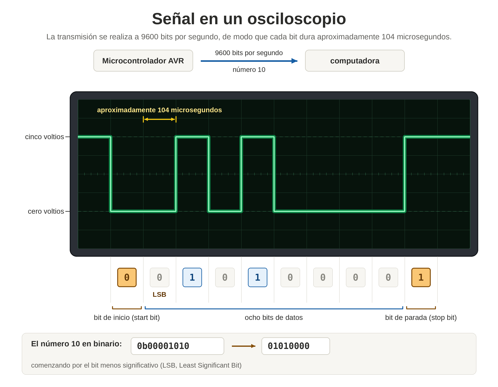
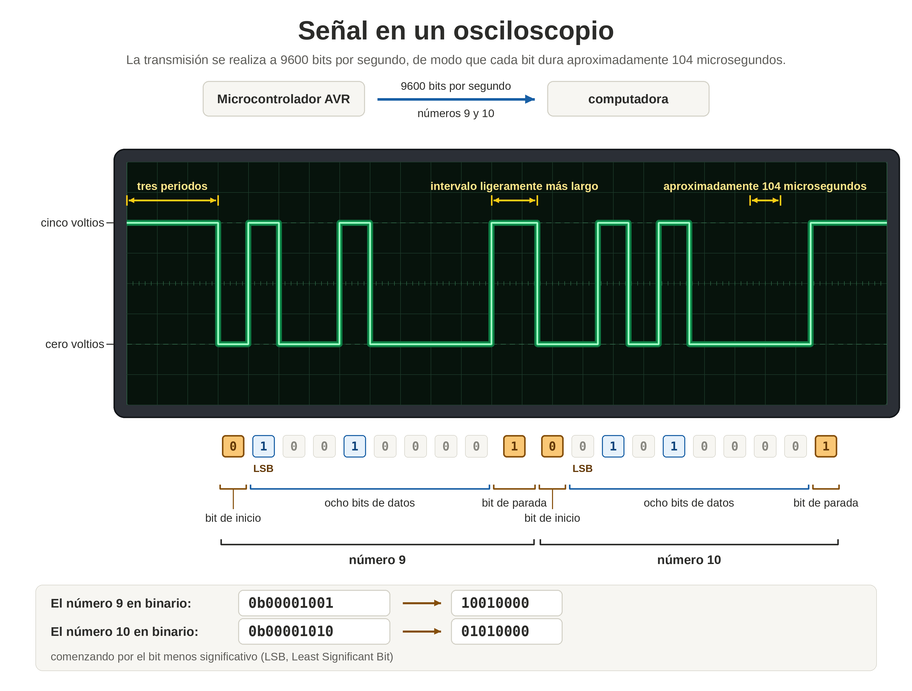

COMUNICACIÓN SERIAL UART EN MICROCONTROLADORES AVR
1. FUNDAMENTOS DE LA COMUNICACIÓN SERIAL
1.1. Comunicación entre dispositivos electrónicos
Los microcontroladores, computadoras y otros circuitos integrados intercambian información mediante señales eléctricas. En una comunicación digital, el dispositivo transmisor genera niveles de tensión que representan estados lógicos; el receptor observa esos niveles a través de una entrada y los interpreta según las reglas de comunicación establecidas.
Una línea digital puede representar información mediante dos estados, denominados habitualmente nivel bajo (LOW) y nivel alto (HIGH). En lógica positiva, estos estados se interpretan como 0 y 1, respectivamente. Los valores de tensión que corresponden a cada estado dependen de la interfaz eléctrica y de las características de los dispositivos conectados; no debe suponerse que todo nivel alto equivale a 5 V o que todo nivel bajo equivale exactamente a 0 V.
1.2. Transmisión serial
En una transmisión serial, los bits de un dato se envían de manera secuencial, uno después de otro, utilizando una línea de señal. Para que el receptor pueda reconstruir la información, ambos dispositivos deben conocer las reglas que definen cómo se representan los bits, en qué orden se transmiten y cuándo debe interpretarse cada uno.
El conjunto de reglas que establece cómo se codifican, transmiten y recuperan los datos se denomina protocolo de comunicación . Un protocolo puede especificar, entre otros aspectos, la temporización, el formato de trama, el orden de los bits y las condiciones que delimitan una transmisión.
1.3. UART: comunicación serial asíncrona
En este capítulo estudiaremos la comunicación serial asíncrona mediante UART (Universal Asynchronous Receiver/Transmitter), un método ampliamente utilizado en sistemas embebidos para intercambiar datos entre microcontroladores, computadoras y otros dispositivos.
En UART, los dispositivos no comparten una señal de reloj de transmisión. Cada extremo utiliza su propia referencia de tiempo y ambos deben configurarse con velocidades y formatos compatibles. El receptor detecta el comienzo de una trama y, a partir de ese evento, temporiza la lectura de los bits que siguen.
UART describe el mecanismo de transmisión y recepción de una trama asíncrona. No determina por sí solo el significado de los bytes intercambiados: ese significado pertenece al protocolo de nivel superior o a la aplicación que utiliza el enlace.
2. REPRESENTACIÓN DE LA INFORMACIÓN EN LA LÍNEA
2.1. Estados eléctricos y estados lógicos
Para ilustrar cómo se representa un bit, consideremos una línea digital con una resistencia pull-up conectada a una alimentación de 5 V. La resistencia mantiene la línea en nivel alto cuando no existe otro elemento que la fuerce a nivel bajo. Un interruptor conectado entre la línea y GND permite llevarla a 0 V al cerrarse.
En este ejemplo, el estado de la línea se puede observar mediante un indicador conectado de forma apropiada. Cuando el interruptor cierra el circuito hacia tierra, la tensión de la línea cae a nivel bajo; cuando se abre, la resistencia pull-up vuelve a elevar la línea. Este montaje permite visualizar los dos estados eléctricos, aunque no constituye por sí mismo una conexión UART real entre dos periféricos transmisores y receptores.
2.2. De los números decimales a los bytes
La información que una aplicación desea enviar puede ser un número, una letra, una instrucción o cualquier otro dato. Sin embargo, UART transmite bits agrupados en unidades de datos —habitualmente bytes de ocho bits—, no números decimales como tales.
Por ejemplo, el valor decimal 10 se representa en un byte como:
0b00001010
El prefijo 0b indica que el número está escrito en
binario. Los ocho dígitos que siguen son los bits del byte. En este
ejemplo, los bits de mayor peso aparecen (MSB, Most Significant Bit)
a la izquierda y el bit menos significativo (LSB, Least Significant
Bit) aparece a la derecha.
Representar los datos en binario permite transmitir un valor mediante una secuencia de estados eléctricos. Por ejemplo, podríamos enviar diez pulsos para tratar de enviar el número 10 y sería muy natural. Pero tendríamos menudo problema al tratar de transmitir el número 255 (el mayor número decimal en un número binario de 8 bits), por por lo poco práctico, lento y propenso a errores que sería enviar y contar tantos pulsos uno por uno; en cambio, al asignar un peso posicional a cada bit, solo necesitamos 8 estados eléctricos para representar hasta ese valor; en cambio, usando el sistema binario, podemos representar ese mismo valor utilizando apenas 8 estados eléctricos (11111111).
2.3. Reglas que deben compartir transmisor y receptor
Para que el receptor interprete correctamente la secuencia eléctrica, ambos dispositivos deben tener una configuración compatible.
- Velocidad de transmisión (baud rate).
- Número de bits de datos.
- Orden de transmisión de los bits, normalmente LSB primero.
- Paridad, si se utiliza.
- Número de bits de parada.
- Niveles eléctricos compatibles y referencia de tierra común cuando se trata de señales UART de lógica.
Si estos parámetros no coinciden, el receptor puede interpretar incorrectamente los datos, detectar errores de trama o no reconocer de forma fiable el comienzo de la transmisión.
3. FORMATO DE UNA TRAMA UART ASÍNCRONA
3.1. Estado de reposo y bit de inicio
En UART convencional, la línea de transmisión permanece en nivel alto cuando está inactiva, condición denominada estado de reposo (idle). Una trama comienza con un bit de inicio (start bit), que lleva la línea a nivel bajo.
El receptor detecta la transición de nivel alto a nivel bajo y la utiliza como referencia para iniciar la temporización de recepción. El bit de inicio no forma parte del byte de datos: sirve para indicar que comienza una trama.
3.2. Bits de datos y orden LSB-first
Después del bit de inicio se transmiten los bits de datos. En la configuración de ocho bits, se envían ocho intervalos de bit. En UART convencional, los bits de datos se transmiten comenzando por el menos significativo (LSB-first).
El valor decimal 10, representado como 00001010 en la
escritura binaria habitual, se transmite en este orden:
Byte: 0 0 0 0 1 0 1 0
Orden de transmisión LSB: 0 1 0 1 0 0 0 0
↑
Primero se transmite D0Los nombres D0 a D7 identifican los bits del byte por su peso: D0 es el bit menos significativo y D7 el más significativo. En la línea, D0 aparece primero y D7 al final.
El orden LSB-first se refiere al orden temporal en que los bits salen por la línea. No significa que el programa deba invertir el byte después de recibirlo. El periférico UART recibe los bits y reconstruye el valor del dato en su registro de recepción.
3.3. Bit de parada
Después de los bits de datos, la trama incluye uno o más bits de parada (stop bits), que mantienen la línea en nivel alto. El bit de parada marca el final de la trama y permite que la línea vuelva al estado de reposo antes de la siguiente transmisión.
Una configuración común es 8N1: ocho bits de datos, sin paridad (No parity) y un bit de parada. En este formato, cada byte transmitido requiere diez intervalos de bit: uno de inicio, ocho de datos y uno de parada.
3.4. Ejemplo de una trama que transmite el byte 10
Para una configuración de ocho bits de datos, sin paridad y un bit de parada (8N1), el byte decimal 10 se transmite con la siguiente secuencia. Se incluye el estado de reposo previo para mostrar que la línea normalmente está alta:
Reposo Inicio D0 D1 D2 D3 D4 D5 D6 D7 Parada
1 0 0 1 0 1 0 0 0 0 1
Orden temporal de los bits de datos:
D0 → D1 → D2 → D3 → D4 → D5 → D6 → D7
El dato transmitido es el número 10. La secuencia de datos que se
observa en el orden temporal de la línea es 01010000;
al escribir el byte en el orden binario convencional, de D7 a D0, se
obtiene 00001010.
4. VELOCIDAD DE TRANSMISIÓN Y TEMPORIZACIÓN
4.1. Velocidad en baudios
La velocidad en baudios (baud rate) expresa la cantidad de símbolos transmitidos por segundo. En una UART asíncrona convencional, cada símbolo corresponde a un bit, por lo que el valor numérico del baud rate coincide con la tasa de bits por segundo (bit/s o bps).
Por ejemplo, si se configura una transmisión a 9600 baudios, cada intervalo de bit dura aproximadamente:
Tbit = 1 / baud rate
Tbit = 1 / 9600 ≈ 104,17 µs
El transmisor mantiene cada bit durante ese intervalo. El receptor utiliza una temporización equivalente para muestrear la línea, normalmente cerca del centro de cada bit, donde se espera que el nivel sea más estable.
4.2. Temporización del receptor
Como no existe una señal de reloj compartida, el receptor utiliza la detección del bit de inicio para sincronizar temporalmente la recepción de esa trama. A partir de la transición que identifica el start bit, calcula los instantes en que debe muestrear los bits de datos y el bit de parada.
El reloj interno del receptor no tiene que ser exactamente igual al del transmisor, pero la diferencia entre ambas temporizaciones debe mantenerse dentro de los límites tolerables por el formato de trama y el hardware. Una diferencia excesiva puede desplazar los instantes de muestreo y provocar errores de recepción.
4.3. Ejemplo a 9600 baudios
La Figura 5-1 muestra una captura de osciloscopio de un AVR que transmite el byte correspondiente al decimal 10 hacia una computadora. La velocidad utilizada es 9600 baudios, de modo que cada bit ocupa aproximadamente 104,17 microsegundos. A esta escala temporal, la trama es demasiado rápida para observarla directamente mediante un LED, pero puede analizarse con un osciloscopio o un analizador lógico.
En la captura se observa una secuencia que incluye niveles altos de reposo, el bit de inicio, los bits de datos y el bit de parada. El patrón anotado en el documento fuente es:
1111100101000011111Para interpretar una captura, no se debe contar toda la secuencia sin identificar primero el inicio de la trama. Los niveles altos que aparecen antes del start bit corresponden al estado de reposo; los que aparecen después pueden incluir el bit de parada y el reposo posterior.
- Localizar la transición de nivel alto a nivel bajo que inicia la trama.
- Identificar el intervalo del bit de inicio.
- Determinar los ocho intervalos de datos, leyendo primero D0.
- Verificar el nivel alto del bit de parada.
- Interpretar los bits de datos como un byte, con D7 a la izquierda y D0 a la derecha al escribirlo convencionalmente.
Figura . Transmisión del byte 10 mediante UART.

5. TRANSMISIÓN DE VARIOS BYTES Y COMUNICACIÓN BIDIRECCIONAL
5.1. Líneas TX y RX
Para que dos dispositivos puedan intercambiar información en ambos sentidos, cada uno necesita una línea de transmisión y una línea de recepción. En una conexión UART de lógica, las señales se denominan TX (Transmit) y RX (Receive).
La salida TX de un dispositivo se conecta a la entrada RX del otro, y la TX del segundo se conecta a la RX del primero. También se necesita una referencia eléctrica común (GND) y comprobar que los niveles de señal sean compatibles. La conexión cruzada permite que cada dispositivo transmita por su TX y reciba por su RX.
Dispositivo A Dispositivo B
TX ----------------------------> RX
RX <---------------------------- TX
GND ---------------------------- GNDCuando ambas líneas pueden transmitir y recibir al mismo tiempo, el enlace funciona en modo bidireccional simultáneo (full-duplex). Esto es una característica de la conexión de dos líneas independientes; UART no requiere que ambos dispositivos transmitan simultáneamente.
5.2. Envío consecutivo de los bytes 9 y 10
La figura siguiente muestra una transmisión consecutiva de dos bytes: primero 9 y luego 10. Cada byte dispone de su propia trama UART, con bit de inicio, bits de datos y bit de parada.
Entre ambas tramas, la línea permanece en nivel alto durante el bit de parada. En la captura original, este intervalo aparece ligeramente más largo porque el AVR estaba ejecutando otras tareas y transcurrieron algunos microsegundos adicionales antes de iniciar la siguiente transmisión.
La pausa no impide la recepción. El receptor termina la trama actual y espera una nueva transición de inicio. UART no exige que los bytes de una secuencia se transmitan sin ninguna pausa; sí exige que cada trama se transmita con una temporización válida y que el receptor pueda detectar correctamente su inicio.
Figura. Interpretación lógica de la transmisión serial de los bytes 9 y 10.
6. EL PERIFÉRICO UART/USART EN LOS AVR
6.1. Limitaciones de generar y recibir UART por software
Transmitir o recibir cada bit mediante instrucciones de software requiere controlar los intervalos de tiempo con precisión. El programa tendría que cambiar el estado de una salida en los instantes adecuados y, para recibir, leer una entrada de acuerdo con una temporización calculada. A velocidades de miles o decenas de miles de bits por segundo, esta tarea puede consumir tiempo de CPU y dificultar que el microcontrolador realice otras funciones simultáneamente.
Por esta razón, los microcontroladores AVR que incorporan el periférico correspondiente disponen de hardware dedicado para generar las tramas y recibirlas. El periférico realiza la temporización y el desplazamiento de los bits, mientras que el programa configura sus registros, entrega los datos que desea transmitir y recoge los datos recibidos.
6.2. UART y USART
En la documentación de los AVR puede encontrarse el nombre USART (Universal Synchronous and Asynchronous Receiver and Transmitter), que se refiere a un receptor y transmisor universal capaz de operar en modo síncrono y asíncrono, según las funciones que implemente el dispositivo. UART se utiliza para referirse al funcionamiento asíncrono.
La disponibilidad, cantidad de periféricos, registros, modos y funciones varía según el microcontrolador. Por eso, al trabajar con un modelo concreto —por ejemplo, ATmega88PA— se debe consultar su datasheet y no asumir que todos los AVR tienen exactamente la misma implementación.
6.3. Qué hace el hardware durante la transmisión y recepción
En términos generales, el periférico UART/USART se encarga de tareas que el programa no necesita ejecutar bit a bit:
- Generar el bit de inicio y los bits de parada.
- Serializar el byte, transmitiendo sus bits en el orden establecido.
- Detectar el comienzo de una trama entrante y temporizar los muestreos.
- Reconstruir el dato recibido y entregarlo mediante el registro de recepción.
- Informar mediante indicadores de estado o interrupciones que un dato se recibió o que la transmisión terminó, según las funciones del periférico.
El programa puede escribir un byte en el registro de transmisión y el hardware genera la trama en la línea TX. En recepción, el hardware detecta y procesa la trama; después, el programa puede leer el byte desde el registro de recepción. El detalle de los registros, las banderas, las interrupciones y la configuración del baud rate se estudiará con el datasheet del AVR específico.
7. CONSIDERACIONES PRÁCTICAS AL CONECTAR UART
7.1. Compatibilidad de niveles eléctricos
Antes de conectar dos dispositivos, hay que verificar sus niveles lógicos y la interfaz eléctrica. Una UART de lógica TTL/CMOS no debe confundirse con una interfaz RS-232: RS-232 utiliza niveles y polaridades eléctricas diferentes y, normalmente, requiere un transceptor apropiado. No se deben conectar directamente señales RS-232 a pines de un microcontrolador AVR.
7.2. Configuración coincidente
Ambos extremos deben estar configurados de forma compatible en baud rate, número de bits de datos, paridad y bits de parada. Una configuración habitual es 9600 baud, 8 bits de datos, sin paridad y un bit de parada (9600 8N1), pero el valor correcto depende del sistema.
7.3. Referencia común y conexiones
En una UART de lógica, normalmente se requiere conectar GND de ambos dispositivos para que las tensiones se interpreten respecto de una referencia común. Además, TX debe conectarse a RX y RX a TX. Deben respetarse los límites de tensión de entrada y salida de cada dispositivo.
8. RESUMEN DEL FUNCIONAMIENTO
Una comunicación UART asíncrona transmite bytes mediante una secuencia de estados eléctricos temporizados. La línea suele permanecer alta en reposo; una transición a nivel bajo anuncia el comienzo de una trama. A continuación se transmiten los bits de datos, normalmente LSB primero, y finalmente uno o más bits de parada en nivel alto.
Transmisor y receptor no comparten un reloj de transmisión, pero deben utilizar velocidades y formatos compatibles. El periférico UART/USART del microcontrolador se encarga de la generación y recepción de las tramas, liberando al programa de la necesidad de manipular cada bit directamente.
Comprender la forma de onda, el formato de la trama y la temporización permite analizar una comunicación con un osciloscopio o analizador lógico, configurar correctamente el periférico y diagnosticar errores de conexión o de parámetros.